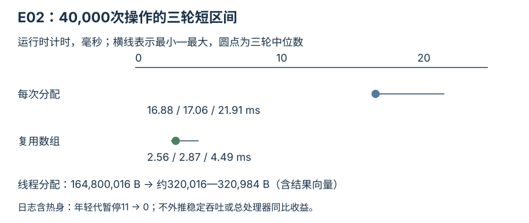
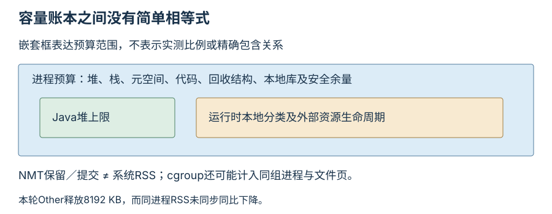

第八篇 · 可观测性、故障分析与性能实践
第36章 性能分析方法与综合案例
性能改变必须放回目标、负载和资源预算。一个更小的暂停、一张更高的吞吐图或一次更早的入口，都不足以独立证明业务已经改善。
本章以 Java 开发工具包（Java Development Kit，JDK）25.0.5.0.2、Java 虚拟机（Java Virtual Machine，JVM）的 OpenJDK HotSpot 实现为基线，提交1775ea114f64；本机为macOS AArch64。源码阅读 · 运行说明 · 证据索引。
36.1 目标与测量口径
36.1.1 先定义完成了什么、从何时计时
吞吐量以成功完成数除以明确时间窗口；延迟分布需要请求起止边界、失败和超时处理；启动至少区分进程创建、入口、就绪和业务稳定。处理器、内存与线程资源应覆盖同一窗口。改变完成定义或丢弃失败样本，会让前后数字失去可比性。
CH36-E01复用第31章60,000次固定请求，只比较运行时uptime入口／就绪和进程外实时间，未宣称真实服务稳定。E02每次测40,000个相同的数组访问；E03每次提交并完成64个任务；E04两种生命周期都请求并触及8兆字节本地内存。各组不相互拼接成总加速比。
36.1.2 平均、分位数和端到端时间分别报告
服务时间从实际开始处理算，端到端时间还包括排队和调度。平均数可能掩盖少量长尾，分位数则依赖样本量与取法。本例E03记录提交到完成，64个样本用nearest-rank计算99百分位时正好落在最大值上，不能把它当成稳定估计的生产尾延迟。
E02逐操作nanoTime本身有成本，40,000次短操作只形成约数毫秒到数十毫秒窗口；它用于解释分配差异，不精确量化任意业务收益。E03固定10毫秒教学等待，也不是实际网络服务。本章同时保留过程计时、进程外time和资源证据，让口径差异可见。
36.2 运行阶段与环境控制
36.2.1 冷启动、预热和稳定阶段不能相互替换
冷启动涉及文件页缓存、依赖准备与机器状态；应用预热涉及类初始化、画像与代码生成。提前处理（Ahead-of-Time，AOT）缓存可能减少重复工作并复用历史画像，当前运行仍有编译。仅凭入口提前不能证明稳定吞吐更高，也不能把后运行组的热文件缓存优势全部归给AOT。
本轮同一主机、同一归档、相同64兆字节堆上限，使用off→on、on→off、off→on的三轮顺序。没有清空系统文件缓存，因此结论限定为当前缓存条件下的短部署观察。训练自动装配用0.59秒进程实时间，产物12,058,624字节；这属于部署前成本。
36.2.2 重复能够显示波动，不能自动消除混杂
硬件为Apple M1 Pro八逻辑核、16吉比字节（gibibyte，GiB）内存，普通对照固定32兆字节初始／最大堆。三轮按组调整顺序，保留每次原始输出；没有隔离其他桌面应用、固定频率或做统计功效设计。少量重复只支持本例方向性解释。
本轮off入口69／73／70毫秒、就绪85／90／87毫秒；on入口25／27／26毫秒、就绪32／34／34毫秒。进程实时间分别约0.10与0.04秒，部署日志仍有当前编译。没有测量达到稳定期的时刻，训练收益也不能跨版本、跨输入直接推广。
| 模式 | 入口 | 就绪 | 边界 |
|---|---|---|---|
| off | 69 / 73 / 70 | 85 / 90 / 87 | 保留默认运行时共享条件，关闭本章AOT缓存 |
| on | 25 / 27 / 26 | 32 / 34 / 34 | 明确指定同一训练缓存，仍有当前编译 |

36.3 微基准方法
36.3.1 用独立进程与测量迭代组织一个小问题
Java微基准工具（Java Microbenchmark Harness，JMH）负责预热、独立运行进程、测量迭代与结果消费，不替作者定义正确问题。本章把JMH1.37放在独立benchmarks模块，普通根构建不触发基准。每个fork用64兆字节堆，两次200毫秒预热、三次200毫秒测量，共两个fork。[S01]
本轮compute返回更新后的线程私有状态，六个迭代聚合为0.969±0.069纳秒／操作；该误差是工具报告的统计口径，不是计时器逐次测出亚纳秒。结果反映批量循环、优化后的依赖链与平台条件，不是单次业务调用延迟。短预热仅作方法演示，没有证明所有编译状态已稳定。
36.3.2 基准错误通常先发生在语义上
不消费结果可能被死代码消除，常量输入可能被折叠，线程共享状态会改变竞争与缓存行为，手工大循环可能使优化跨越操作边界。计时、日志和数据准备若放错位置，还会把框架成本算成被测工作。本例返回状态并采用Scope.Thread，不在被测调用逐次记录日志。
JMH输出还提示当前虚拟机使用实验性编译器Blackhole，以及自身使用已弃用Unsafe方法。本轮保留告警，没有为了消除它们升级依赖或关闭机制。没有取得该基准的机器码，故不把一个纳秒数字归因于精确指令条数；更不据此判断业务方案优劣。
mvn -f chapters/ch36-performance-cases/benchmarks/pom.xml compile \
org.apache.maven.plugins:maven-dependency-plugin:3.8.1:build-classpath \
-Dmdep.outputFile=target/classpath.txt
# 完整工具路径、类路径与有限fork参数见运行说明。
java -Djmh.bindAddress=127.0.0.1 -cp "$CASE_CLASSPATH" \
org.openjdk.jmh.Main WorkBenchmark -rf json -rff jmh.json
36.4 分配、存活与收集器选择
36.4.1 把分配工作与活对象成本分开
E02让数组通过volatile引用逃逸，前态每次创建4096字节数组，后态复用线程私有scratch；两者均执行相同索引写入。每进程先10,000次热身，再40,000次测量。存活只保留最近数组，结果向量等统计成本两组都存在，线程分配计数也包含该向量，约320千字节。
前态测量分配164,800,016字节，后态约320,016—320,984字节；Garbage-First（G1）日志在包含热身的全进程记录11次年轻代暂停，复用组为0。测量区间前态16.88—21.91毫秒、后态2.56—4.49毫秒；以完成数／该区间计算约1.83—2.37百万操作／秒与8.91—15.63百万操作／秒。这些是同一短输入的探索记录，不是稳定吞吐承诺。

36.4.2 减少暂停要连同总资源成本解释
复用减少分配与清零、回收工作，却延长了scratch所有权，也会引入跨任务共享、数据残留或并发误用风险。若原算法需要独立数组供消费者持有，当前替换不保语义。本例只有单线程即时写入，没有把这项变更当成一般对象池建议。进程外处理器时间约0.08—0.10秒量级，启动和格式化占比较大，不能由短区间差异推导总处理器时间同比下降。
收集器选择还要固定资源预算、存活比例与分配速率，同时报告业务延迟、完成量和总内存。第21—24章的机制对照说明暂停、并发工作和余量取舍，本轮不以E02对G1的单一输入重排收集器优劣。降低堆上限或换收集器也不能消除本来不必要的分配。
36.5 容器资源与运行时配置
36.5.1 处理器配额由所有运行时工作共同消耗
中央处理器（Central Processing Unit，CPU）配额不等于线程数：编译、回收、业务与诊断线程共同竞争调度资源。Linux控制组（control group，cgroup）v2的cpu.max是配额／周期，cpu.stat节流信息应和延迟区间关联。ActiveProcessorCount改变虚拟机看到的处理器数量，不会替操作系统真正实施CPU配额。[S02]
本轮虚拟线程调度器parallelism和maxPoolSize都固定2；macOS实际可见处理器仍为8，没有宣称这等于两核容器。第35章的容器部分按用户同意的源码／官方来源范围验收；本地线程观察不能伪装成Linux限额实测。
36.5.2 堆上限只是容量预算的一项
容量预算还包括栈、元空间、代码缓存、收集器结构、本地库、外部内存、文件映射及安全余量。本地内存跟踪（Native Memory Tracking，NMT）分类不是进程驻留集大小（Resident Set Size，RSS）的分解恒等式；cgroup还可能包含文件页缓存和同组其他进程。
E04使用外部函数与内存（Foreign Function & Memory，FFM）的Arena作用域。前态一个长作用域保留32块256千字节内存，后态每任务关闭；两组请求并触及字节相同。NMT的Other在前态快照为8192千字节，关闭后差异为-8192千字节；后态快照为0、峰值256千字节。这支持生命周期缩短，而不是靠增大堆解决本地占用。

36.6 综合案例组织
36.6.1 同步与虚拟线程：先改变真正的串行边界
E03前态把10毫秒教学等待放在synchronized内，后态只在递增completed时持锁。64个任务三轮都完成；锁内等待组总区间约797.5—803.5毫秒，缩窄组约19.7—21.3毫秒，提交到完成的99百分位约784—797与18.5—19.8毫秒。原因是互斥边界缩窄，不是25版同步自动带来并行业务语义。
另一个相同预算对照用四平台工作线程，或虚拟线程加四许可Semaphore。二者都限制同一等待阶段最多四个任务：平台组约196.3—203.1毫秒，虚拟组约203.5—206.3毫秒。本轮没有更快的虚拟组结果，任务创建／调度成本和短窗口足以影响排序；它不能否定更大并发等待场景的承载价值。
| 组 | 实际改变与结果 | 成本／失败条件 |
|---|---|---|
| E01启动 | 入口／就绪更早，当前编译仍在 | 训练0.59秒与约12.06兆字节缓存；代表性、兼容与冷热未穷尽 |
| E02分配 | 分配计数和短区间下降 | 复用所有权改变；并发或下游持有时不可直接替换 |
| E03同步 | 缩窄临界区有改善；同预算虚拟组没有更快 | 等待位置与并发许可必须保语义，不能无限放大下游负载 |
| E04本地内存 | Other保留量随作用域缩短下降 | RSS未同步下降；任务后不得继续使用已关闭内存段 |
36.6.2 让收益、无效结果和残余问题都进入报告
E04前态RSS从55,408到55,360千字节，虽NMT释放8兆字节却没有立即同比下降；后态窗口RSS47,216千字节。不同进程的初始化、分配器和驻留行为也会影响差值，因此只报告当前快照，不把它们当成每块本地内存的精确物理回收量。完整系统与NMT记录共同保留。
四组案例都以相同观测边界描述前后，并写明收益、成本和失败条件。Linux容器终止、真实崩溃和稳定长时性能按用户同意范围保留后续复核；没有从这些小实验推导通用生产参数。全书的落点是能解释证据和机制，并知道下一项最小观察能排除什么。
观察与边界
普通模块与独立JMH模块分别编译；没有新增测试或断言。JMH首次因沙箱通信受限失败，获准后仅回环通信运行完成。四组原始输出、固定源、配置及重复顺序均在本章记录。
回顾与思考
- 就绪提前为何不能自动推出稳定吞吐提高？
- 同为四任务并发预算时，虚拟线程组略慢应怎样解释？
- NMT释放而RSS近乎不变，是否足以证明释放无效？
来源与实现入口
- S01：JMH1.37官方源码与样例；实际构建依赖、警告与两fork结果随证据保留。
- S02：内核cgroup v2资源接口；本机没有容器配额运行。
- S03：复用第10—12、16、20—24、27—28、31—32章的分配、回收、锁、缓存与本地所有权实现入口，精确符号及本轮固定输入见证据索引。
- O01：四组对照与JMH运行记录，图中数据均从对应实际输出整理。